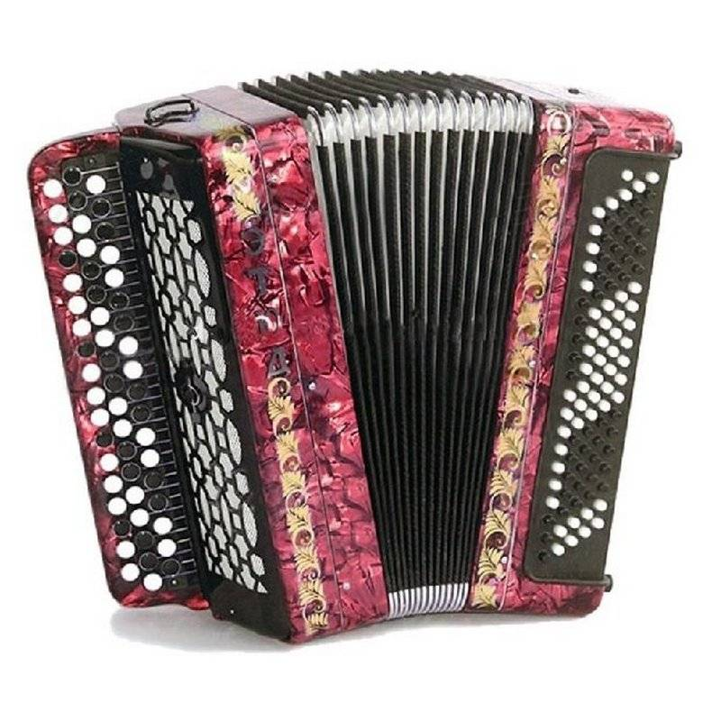

Виды музыкальных инструментов
Классическая (испанская, шестистру́нная) гита́ра — струнный щипковый музыкальный инструмент. Основной представитель семейства гитар в целом, и акустических гитар в частности. В современном виде существует со второй половины XVIII века, используется как сольный, ансамблевый и аккомпанирующий инструмент. Гитара обладает большими художественно-исполнительскими возможностями и широким разнообразием тембров.
Классическая гитара имеет шесть струн, основной строй которых — e1, h, g, d, A, E (ми первой октавы, си, соль, ре малой октавы, ля, ми большой октавы). Ряд музыкальных мастеров проводили эксперименты по добавлению дополнительных струн (десятиструнная гитара Фердинандо Карулли и Рене Лакота, пятнадцатиструнная гитара Василия Лебедева, девятиструнная, ГРАН-гитара и др.), однако такие инструменты широкого распространения не получили.
Скри́пка (от ст.‑слав. скрыпати — «скрипеть», итал. violino[1]) — струнный смычковый музыкальный инструмент высокого регистра. Имеет народное происхождение, современный вид приобрела в XVI веке, получила широкое распространение в XVII веке. Имеет четыре струны, настроенные по квинтам: g, d1,a1,e2 («соль» малой октавы, «ре», «ля» первой октавы, «ми» второй октавы), диапазон от g («соль» малой октавы) до a4 («ля» четвёртой октавы) и выше. Тембр скрипки густой в низком регистре, мягкий в среднем и блестящий в верхнем.
Бывают также и пятиструнные скрипки, с добавлением нижней альтовой струны c («до» малой октавы).
Принадлежит музыкальный инструмент многим народам, в том числе и русским[2].
Бараба́н (вероятно, слово тюркского происхождения[1][2]) — музыкальный инструмент из семейства ударных[3].
Распространён у большинства народов, используется в составе многих музыкальных ансамблей. Исполнитель на барабане — барабанщик.
Типичным представителем является мембранный барабан, состоящий из полого корпуса-резонатора определённой формы или рамы, на которую натянута кожаная или пластиковая мембрана. Её натяжением регулируется относительная высота звука. Корпус барабана производится из дерева, металла (стали, латуни), акрилового пластика[4] или даже глины[5].
Звук извлекают ударом по мембране деревянной колотушкой с мягким наконечником, палочкой, щётками, руками, а иногда и трением[6]. Для использования нескольких инструментов одновременно барабаны собираются в ударную установку.
Барабаны других конструкций — стальной барабан, щелевой барабан — не имеют мембран и относятся к идиофонам.
Труба́ (древневерхненем. trumba; итал. tromba, фр. trompette, нем. Trompete, англ. trumpet[1]) — медный духовой музыкальный инструмент альтово-сопранового регистра, самый высокий по звучанию среди медных духовых. С древнейших времён натуральная труба использовалась в качестве сигнального инструмента, примерно с XVII века вошла в состав оркестра. С изобретением механизма вентилей труба получила полный хроматический звукоряд и с середины XIX века стала полноценным инструментом классической музыки. Обладает ярким, блестящим тембром, используется как сольный инструмент или в симфоническом и духовом оркестрах, а также в джазе и других жанрах. Труба используется в разных музыкальных традициях, в том числе и русской[2][3].
Играющий на трубе называется трубачом. В гвардии и армии Российской империи (кавалерии и артиллерии) существовал нижний чин «Трубач», это был военнослужащий, подающий сигналы. Аналогичную функцию в пехоте выполнял горнист (от слова горн)[4][5].
Пиани́но (итал. pianino, дословно: маленькое фортепиано) — клавишный струнный музыкальный инструмент с ударным (молоточковым) способом звукоизвлечения, созданный специально для комнатного музицирования в небольших помещениях. Пианино представляет собой уменьшенную по размеру разновидность фортепиано, в которой струны, дека и механическая часть расположены вертикально, а не горизонтально, вследствие чего пианино занимает гораздо меньше места, чем рояль.
Аккордео́н (от фр. accordéon) — хроматическая ручная гармоника с клавиатурой мелодии фортепианного (наиболее часто) типа. Клавиатура аккомпанемента такая же как у баяна[2]: с 5—6 рядами кнопок, звучащими басами и аккордами (готовый аккордеон) или отдельными нотами (выборный или готово-выборный аккордеон).
В голосах мелодии два строевых (основных) язычка как правило звучат в «розлив» (с небольшой разницей в настройке), что определяет особенность звучания аккордеона по сравнению с баяном, у которого те же язычки звучат точно в унисон. Ещё одним отличительным признаком является более вероятное наличие регистров в голосах мелодии (см. Количество голосов. Регистры).

Бая́н — русская[1][2] хроматическая ручная гармоника с 3—6 рядами круглых кнопок на клавиатуре мелодии и 5—6 рядами кнопок на клавиатуре аккомпанемента, клавиши которого звучат басами и аккордами (готовый баян) или отдельными нотами (выборный или готово-выборный баян).
Баян входит в состав оркестра русских народных инструментов.
А́рфа — струнный щипковый музыкальный инструмент, состоит из двух расположенных под углом рам, между которыми натянуто множество струн. Один из древнейших инструментов, символ Ирландии. В XVIII столетии была изобретена педальная арфа, ставшая стандартом в классической музыке.
Балала́йка — русский народный трёхструнный щипковый музыкальный инструмент с корпусом треугольной формы. Характерными приёмами звукоизвлечения являются бряцание и тремоло — удары указательным пальцем по всем струнам одновременно.
Самый известный русский инструмент, ставший, наряду с гармонью и гуслями, одним из символов музыкального творчества русского народа.
Подняться НАВЕРХ